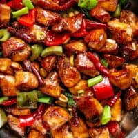

Kung Pao Chicken

Description
Simple spicy asian chicken dish.
Ingredients
Chicken:
- 28 ounces (800g) boneless/skinless chicken breast cut into 1 inch cubes
- 1 tablespoon shaoxing wine or dry sherry
- 1 tablespoon light soy sauce
- 2 teaspoons baking soda
- 1 teaspoon cornstarch / corn flour
Sauce:
- 1/2 cup low-sodium chicken stock (or broth) -- water can be used
- 5 tablespoons light soy sauce
- 2 tablespoons Chinese black vinegar (or substitute good-quality balsamic vinegar)
- 2 tablespoon Chinese Shaoxing wine (or dry sherry)
- 2 teaspoon dark soy sauce
- 2 teaspoons hoisin sauce
- 2 tablespoons sugar*
- 1 teaspoon cornstarch / corn flour>
Stir Fry:
- 4 tablespoons cooking oil divided
- 1 1/2 tablespoons garlic (4-6 cloves)
- 1 tablespoon ginger
- 1/2 red bell pepper (capsicum) seeded and diced
- 1/2 green bell pepper (capsicum) seeded and diced
- 8-10 dried chilies cut into ½-inch pieces (adjust to taste)
- 1 tablespoon Sichuan peppercorns, lightly toasted and ground**
- 4 green onion / scallion stems cut into 1-inch pieces
- 1/2 cup roasted/unsalted peanuts
- 2 teaspoons sesame oil optional
Steps
- Combine all ingredients for the chicken in a shallow bowl; cover and marinate for 10 minutes (if time allows).
- Whisk sauce ingredients together until sugar dissolves; set aside.
- Heat a large skillet, pan or wok over high heat. Add 2 tablespoons of cooking oil, allow to heat up, then add marinated chicken. Fry chicken for 3-4 minutes while occasionally stirring, until edges are browned. Remove from heat and set aside.
- Add remaining cooking oil into the same pan/wok. Stir in garlic, ginger, chili diced peppers (capsicums) and Sichuan peppercorns and stir fry for 1 minute.
- Give the prepared sauce a mix, then pour it into the pan and bring it to a boil while stirring.
- Once it begins to thicken slightly, add chicken back into the pan/wok and mix all of the ingredients through the sauce until the chicken is evenly coated and sauce has thickened, (about 2 minutes).
- Stir in green onions, peanuts and sesame oil. Toss well and continue to cook for a further 2 minutes to infuse all of the flavours together.
- Serve immediately with steamed/cooked rice or fried rice!